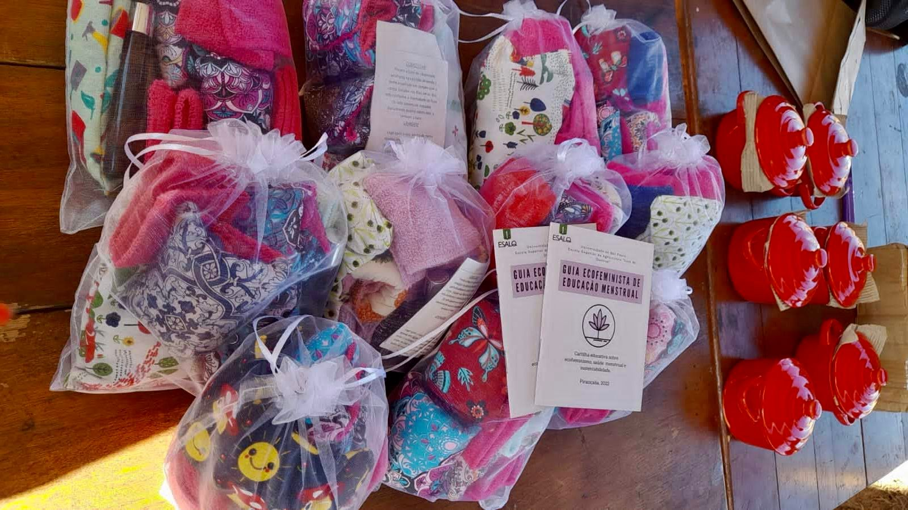

PARA ONDE O MEU DINHEIRO VAI?
O dinheiro que você nos manda é utilizado para a compra dos itens que integram nosso kit de higiene menstrual distribuído em escolas e comunidades periféricas da região de Piracicaba, onde atuamos.
O que contém no kit de tecnologia menstrual?

• Almofada de grãos e ervas: este item é projetado para aliviar dores, como cólicas menstruais. Pode ser aquecido no micro-ondas e aplicado na região abdominal durante o período menstrual.
• Óleo de Massagem: Feito com óleos essenciais de várias ervas, é utilizado para massagem em áreas doloridas, proporcionando alívio. Algumas mulheres também relatam usá-lo nos pés antes de dormir para ajudar durante o período menstrual.
• Tecnologias Menstruais: Incluem o coletor menstrual, o disco menstrual e absorventes de pano, promovendo uma abordagem mais sustentável para o manejo menstrual.
É importante ressaltar que esse projeto vai além da distribuição de absorventes, busca empoderar pessoas com útero, incentivando o autoconhecimento e o entendimento de seus ciclos menstruais, relacionando-os ao ciclo da natureza. Se tem como princípio desmistificar a menstruação, que muitas vezes é tratada como suja e vergonhosa, ao mesmo tempo em que se promove a dignidade íntima das pessoas que menstruam.
Em projetos específicos, como o realizado nas eletivas em escolas, os alunos são envolvidos na criação das almofadas de sementes e ervas e no óleo de massagem. Isso não apenas proporciona um conhecimento prático sobre as ervas, mas também ajuda a quebrar o tabu em torno da menstruação desde cedo. Além disso, o uso de tecnologias menstruais sustentáveis permite uma compreensão mais profunda do ciclo menstrual e a valorização da produção local é essencial para nosso coletivo.
Outrossim, nosso objetivo é capacitar as pessoas que menstruam, promovendo o entendimento e aceitação de seus corpos e ciclos menstruais, ao mesmo tempo em que se adota práticas sustentáveis e respeitosas com o meio ambiente.